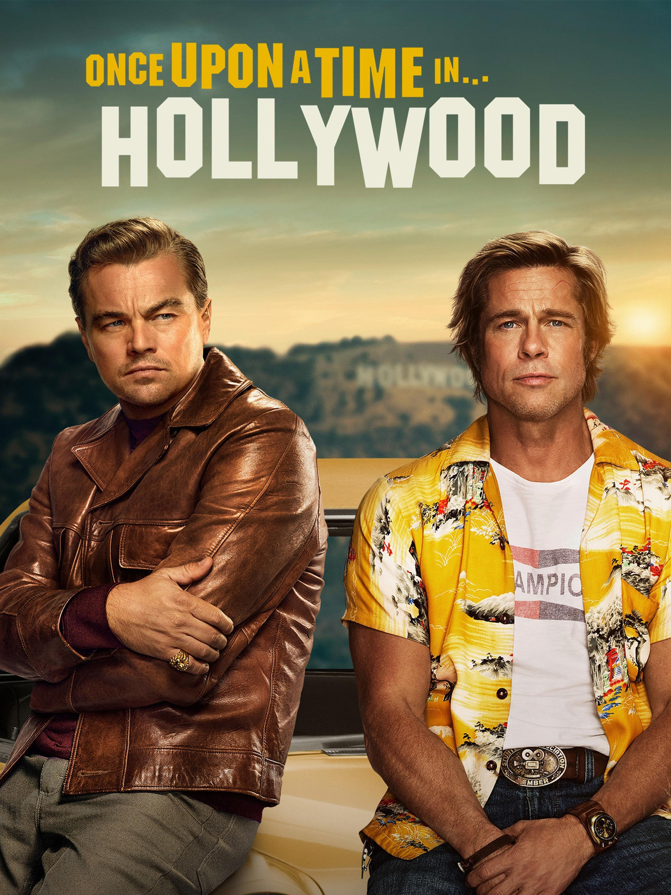

Released in 2019, another masterpiece from the well-acclaimed Quentin Tarantino.
I was a bit unsettled by the premise as it was set in 1969 Los Angeles.
Given the infamous Tate murders, l wondered what direction Tarantino would take.
But that ending was one of the most satisfying I've ever seen.

Learn more about it